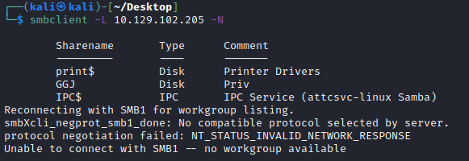

Linux
Linux (UNIX) machines can also be used to browse and mount SMB shares. Note that this can be done whether the target server is a Windows machine or a Samba server.
1.
smbclient: Check Available Shared Folders
2.
mount: mount SMB shares to interact with directories and files
Note: we need to install cifs-utils to connect to an SMB share folder. To install it we can execute from the command line sudo “apt install cifs-utils”
◇ No Authentication
sudo mkdir /mnt/folder
sudo mount -t cifs -o domain=. //address/folder /mnt/folder
◇ With Authentication
▪ user and password on the command line
sudo mkdir /mnt/folder
sudo mount -t cifs -o username=[user],password=[password],domain=. //[address]/folder /mnt/folder
▪ via credential file
sudo mkdir /mnt/folder
sudo mount -t cifs //[address]/folder /mnt/folder -o credentials=/path/credentialfile.txt
credentialfile.txt
username=plaintext
password=Password123
domain=.
3.
find: filename that contains the string PATTERN
find /mnt/folder/ -name *PATTERN*
4.
grep: search inside the files for a PATTERN
grep -rn /mnt/folder/ -ie PATTERN